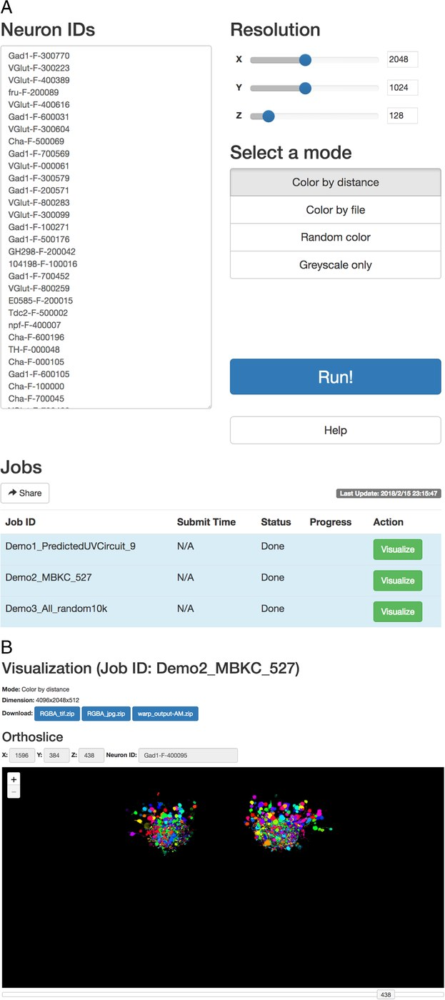
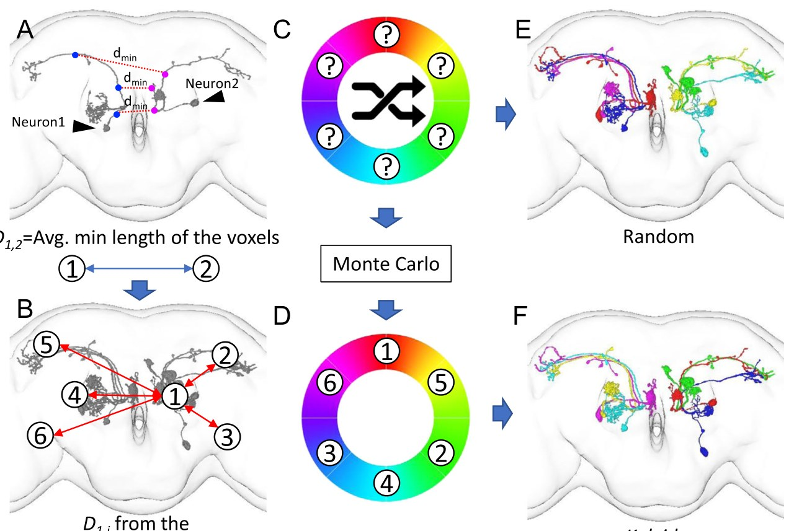
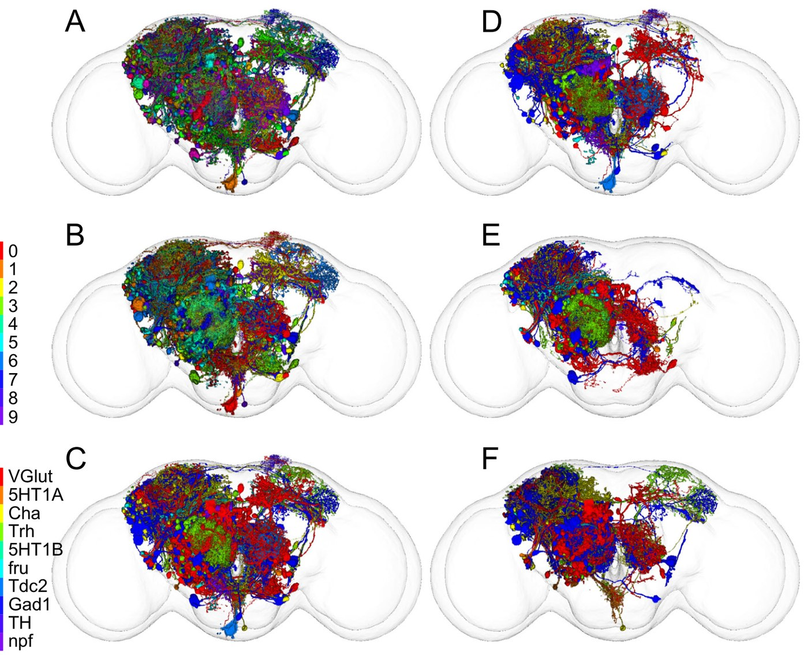
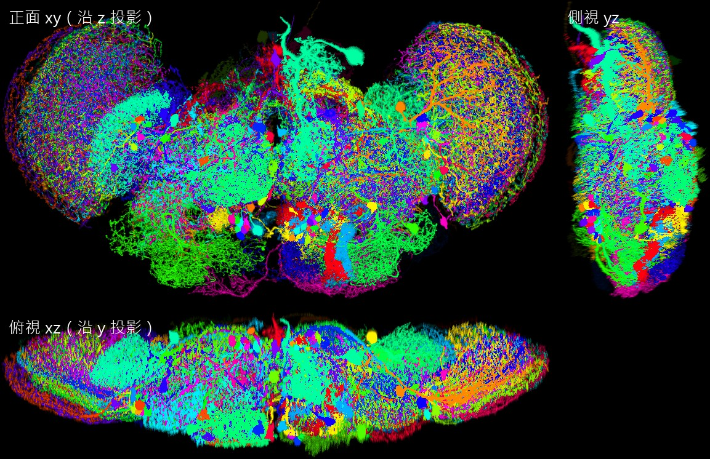
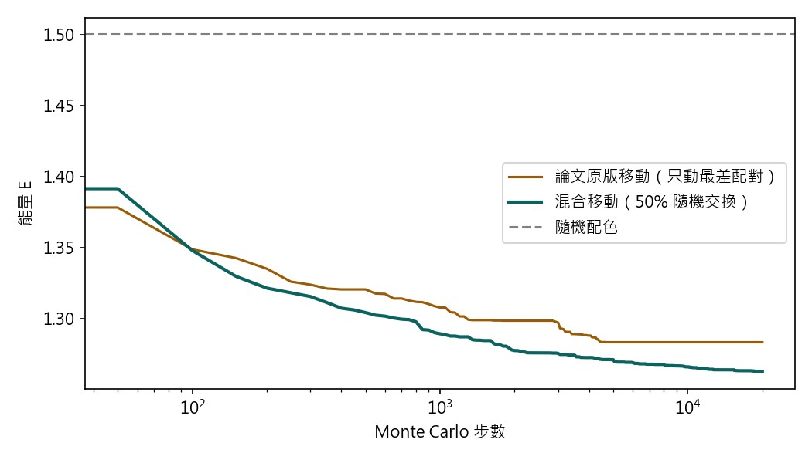
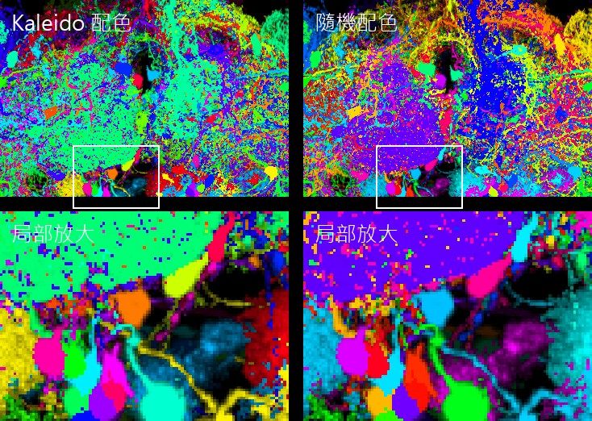
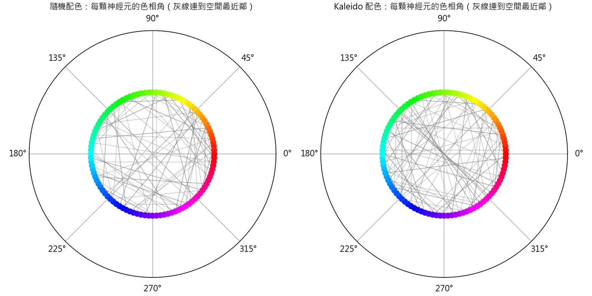
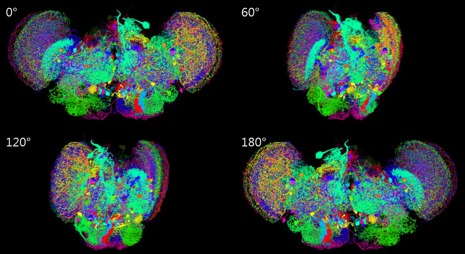

復刻 Kaleido
一篇論文、一百顆神經元影像、一句指令。這一集做兩件事：把 Kaleido 這篇論文講清楚—— 上萬顆神經元怎麼同時看、怎麼讓鄰居穿不同顏色的衣服；然後讓 Agent 從零把程式寫出來、跑出三視圖和旋轉動畫。 過程中撞的牆都留著，因為這一集還要講第三件事：agentic coding 到底是怎麼一回事。
 播放教學影片 · 10 分 26 秒 · 在 YouTube 開啟 ↗
播放教學影片 · 10 分 26 秒 · 在 YouTube 開啟 ↗
怎麼讀這一頁
論文：十萬顆神經元怎麼一起看
Kaleido（Wang, Chen, He, Wang, Shih, Chiang, Neuroinformatics 2018）是 FlyCircuit 研究線的第一篇工具論文。前面的論文累積了十萬量級的單神經元影像，但「同時看見上萬顆神經元」這件事在技術上是卡住的：每顆神經元的影像檔約一百 MB，十三萬顆全載入要 10 TB 量級的記憶體；而且就算載得動，市售 3D 軟體同時渲染的物件數也有上限。
論文的解法有兩個部分，各對付一個瓶頸：記憶體與顏色。
A formidable challenge is to simultaneously visualize a large number of distinguishable single-neuron images, with reasonable processing time and memory for file management and 3D rendering. […] Kaleido maximizes color contrast between neighboring neurons so that individual neurons can be easily distinguished.

論文：第一招，把圖層壓平
處理「載不動」的辦法，是放棄「每顆神經元一個物件」。Kaleido 把選定的神經元全部畫進同一張 3D 影像——像把 Photoshop 裡一萬個圖層壓平成一張。壓平之後檔案大小只由那張圖的解析度（標準腦空間）決定，跟裡面畫了幾顆神經元幾乎無關：一萬顆和一千顆佔的記憶體差不多。
代價也明確：壓平後個別神經元不能再單獨操作。論文的補救是留一條反查通道——同一個 voxel 被多顆神經元佔據時只記錄強度最高的那一顆（winner-take-all），所以每個亮著的像素都對應唯一一顆神經元，點它就能回報 NeuronID。
- 單顆影像約 10² MB；全腦約 13 萬顆 → 天真載入 10 TB 量級 —— 條目〈概述〉
- 記憶體由標準腦空間主導；距離與能量矩陣 O(N²) 為次要項；實測至 10⁴ 顆 —— 條目〈方法〉
- 輸出解析度可調，建議 2048×1024×128；輸出 AmiraMesh／OME-TIFF 回接通用軟體

論文：第二招，讓鄰居穿不同顏色
一萬顆神經元要各自可辨認，就得上不同的顏色。隨機上色的問題是：兩顆緊緊纏在一起的神經元完全可能抽到幾乎一樣的顏色。這本質上是地圖著色問題的親戚——相鄰的國家不能同色——差別在「相鄰」有遠近程度、顏色是連續的色相環。
Kaleido 把它變成物理問題。每一對神經元之間有一條「不舒服程度」：離得越近、顏色又越像，就越不舒服。全部配對加總得到總能量，再用 Monte Carlo 反覆交換顏色——能量下降就接受、偶爾容忍暫時變差——直到「空間上的鄰居在色相環上離得遠遠的」。
- 單神經元影像轉入標準腦；同一 voxel 只記最強的那顆
- 每顆隨機取 100 個 voxel；對第一顆的每個點找第二顆最近的點，兩組互算取平均 → 距離矩陣 D
- 選配色模式：自動（by distance）／讀檔／隨機／灰階
- N 顆的色相角均勻分布 θ(i)=360°·i/N；能量 E = Σi<j 1 / ( dij · min(Δij, 360°−Δij) )
- Monte Carlo：隨機初始；每步挑目前能量最高的配對之一，與另一隨機神經元互換色相角；接受機率 min(1, e−βΔE)；步數上限 10N
- HSV → RGB：hue 來自第 5 步、S=1、V=正規化強度；原始強度作為 α
- 合併輸出單一 RGBA 檔

論文：顏色也可以是資料，以及侷限
自動配色之外，Kaleido 留了「照檔案上色」模式：給一張表指定每顆神經元的顏色。論文把右嗅覺模組的神經元按出生日期和神經傳導物質上色再交叉組合，同一團影像立刻浮現不同的圖案。作者說這些只是「快速的印象」，嚴謹結論需要進一步研究——但探索工具該做的正是讓值得追的問題自己跳出來。
侷限在哪？天花板不在演算法，在光學：螢光影像解析度有限、光會散射，太多神經元擠在一起時訊號本身就糊了。另外，配色的「好」是用幾何距離加色相差定義的，不是用人眼的感知——色相環上距離相同的兩對顏色，人眼未必覺得一樣好分；色覺異常的使用者不在公式的考慮裡。

- Methods 引用 Fig. 4a 講執行時間，但 Fig. 4a 是能量分布圖——應為 Supplement Fig. 1a
- 距離用每顆 100 個 voxel 抽樣近似；抽樣數對配色穩定性的影響未報告
- Monte Carlo 無最佳性保證：N! 的排列空間用 10N 步啟發式搜尋，找到的是「夠好」不是「最佳」
- 定量驗證（Fig. 4）只用隨機 1,000 顆，不是展示用的 10,000 顆
復刻：一句指令，先讀規格、先看資料
接下來製作 EP05，內容是 Kaleido。這一集專注於介紹 Kaleido 這篇論文的內容，並且將程式復刻。這是 FlyCircuit 裡隨機選出的 100 顆 neuron 影像：（Google Drive 連結）
要求產出：跟 EP01~04 那樣的教材格式（記得要放圖！），注意裡面要放重組起來的影像的三視圖以及旋轉動畫。除此之外，復刻的程式放在 …\Tutorial\ep05\Kaleido_repo\ 裡，但還不要推上 GitHub
內容的部分，除了介紹 Kaleido 之外，這次會用到你的 Agentic Coding/Vibe Coding 能力，所以也要透過你這次的實作，講一下這部分的概念。
一樣一口氣做到成品。
資料在這裡，想跟著做的人可以下載：FlyCircuit 隨機 100 顆單神經元影像（Google Drive，64 MB zip）——解壓後是 100 個 *_warp_volume.am。
- 先讀規格，不先寫碼。開知識庫裡的 Kaleido 條目，把〈方法〉的七步抄下來當規格（第 03 步那張清單）。論文本身沒有公開程式碼，能復刻的依據就是這七步加能量函數。
- 下載資料、看檔頭。64 MB 的 zip，裡面 100 個
*_warp_volume.am。第一件事是打開一個檔案看前 1,500 bytes——AmiraMesh 二進位格式、ushort、HxZip（zlib）壓縮、lattice 542×269×252、BoundingBox 在標準腦的物理座標。 - 順手看了影片管線的
assemble.py，確認它一張投影片只撐一張圖——旋轉動畫要進影片，工具得先改（第 12 步）。
# AmiraMesh BINARY-LITTLE-ENDIAN 2.1 define Lattice 542 269 252 Parameters { Content "542x269x252 ushort, uniform coordinates", SaveInfo "AmiraMesh ZIP", BoundingBox -267.604 273.396 -260.564 7.43608 -147.191 103.809, CoordType "uniform", Filename "/disk/sourceData/data2014_a11/5-HT1B-F-100000/5-HT1B-F-100000_seg001_clear.am" } Lattice { ushort Data } @1(HxZip,638779) # Data section follows
BINARY-LITTLE-ENDIAN、ushort、HxZip（zlib 壓縮，後面的數字是壓縮後長度）、BoundingBox（這一顆在標準腦裡的位置——第 07 步才知道它有多重要）。復刻：讀檔器與稀疏化，小步驗證
- 寫
amira.py：用正則從檔頭抓 lattice、dtype、壓縮方式、BoundingBox；找到@1那一行之後的位置，zlib.decompress，np.frombuffer成 (z, y, x) 的陣列。 - 寫
sparse.py：73 MB 的 ushort 體積 × 100 顆不可能全留在記憶體，只留非零 voxel 的座標與強度。 - 先只讀一個檔案測：0.08 秒、294,802 個非零 voxel、強度 0–255（ushort 裡裝的其實是 8-bit 值）。對了才往下。
def read_amira(path): raw = open(path, "rb").read() head_end = raw.find(b"# Data section follows") header = raw[:head_end].decode("ascii", "replace") nx, ny, nz = map(int, re.search(r"define Lattice (\d+) (\d+) (\d+)", header).groups()) comp = re.search(r"@1\((\w+),(\d+)\)", header) # HxZip, 壓縮後長度 data_start = raw.find(b"\n", raw.find(b"@1", head_end)) + 1 blob = zlib.decompress(raw[data_start:data_start + int(comp.group(2))]) vol = np.frombuffer(blob, dtype=np.uint16).reshape(nz, ny, nx) # Amira：x 變動最快 ... $ python -c "...read one file..." (252, 269, 542) uint16 load 0.08s max 255 nonzero 294802
復刻：撞牆——100 個檔案、100 種尺寸
- 把距離矩陣、能量函數、Monte Carlo、合併、三視圖、旋轉一口氣寫完，跑整條管線。讀檔、距離、MC 都過，到「合併成一張 RGB 體積」時——
IndexError: index 280 is out of bounds for axis 1 with size 269。 - 有一顆神經元的座標超出第一顆的體積。查：100 個檔案有 100 種 lattice 尺寸、100 個 BoundingBox。每個 .am 是各自裁切的小體積，真正共同的是 BoundingBox 所在的標準腦物理座標（voxel 1 µm）。
- 回頭看論文的第 1 步「單神經元影像轉入標準腦」——在這批資料上它的意思就是：index → bbox_min + index × voxel_size，再全部對齊到同一個整數格點。加一個
align()，共同畫布 242×488×895。 - 重跑：100 顆、28,823,759 個非零 voxel，winner-take-all 後佔 15,684,811 個——有 45% 的 voxel 被更亮的鄰居蓋掉。這個數字一開始看起來太高，查了 voxel 大小（每軸 1.000 ± 0.000003 µm，沒有縮放誤差）才接受：視葉裡的神經元真的擠成那樣。
File "kaleido/render.py", line 29, in composite
cur = inten[z, y, x]
IndexError: index 280 is out of bounds for axis 1 with size 269
$ 查 100 個檔頭的 lattice 與 BoundingBox
Counter({'542 269 252': 1, '487 369 189': 1, '128 168 77': 1, '560 297 201': 1, ... })
100 distinct bounding boxes
-267.604 273.396 -260.564 7.43608 -147.191 103.809
-38.2405 447.76 -307.865 60.1345 -128.89 59.1098
...
$ 修正後
22:13:09 對齊到標準腦共同畫布 (242, 488, 895)（原點 [-140, -337, -450] µm）
22:13:20 100 顆，總非零 voxel 28,823,759
復刻：第一張對的圖
對齊之後，三視圖跑出來了。正面圖（沿 z 投影）一看就是果蠅腦：兩側圓的是視葉、中間是中央腦、下方是食道下神經節。100 顆神經元裡有一批視葉的、有幾顆投射很遠的（上方那條淡綠色往背側延伸的是 Trh 神經元）。三視圖是論文沒有的輸出，是你指令裡要的。

復刻：Monte Carlo 卡住了，做個實驗
- 照論文的移動方式實作：每步找目前能量最高的配對，挑其中一顆與隨機一顆互換色相角，Metropolis 接受。跑 20,000 步，能量從隨機的 1.50 降到 1.29——但曲線在 3,000 步左右就平了，之後 17,000 步一動不動。
- 懷疑：只從「最差配對」下手，會反覆在同幾顆之間打轉，卡在局部最小。第 04 步條目記的疑點「MC 無最佳性保證」正是這件事。
- 做一個小實驗：混入比例 p 的「純隨機挑兩顆互換」，p = 0／0.5／1，各 1,000／5,000／20,000 步，每格三個種子。結果在下表。
- 決定：預設 p=0.5（能量更低、變異更小），但保留
--p-random 0還原論文原版；發現寫進 docstring 和 README。
| 移動方式 | 1,000 步（論文的 10N） | 5,000 步 | 20,000 步 |
|---|---|---|---|
| 論文原版：只動最差配對（p=0） | 1.3055 ± 0.0016 | 1.3011 ± 0.0021 | 1.2915 ± 0.0094 |
| 混合：一半隨機交換（p=0.5） | 1.2923 ± 0.0061 | 1.2734 ± 0.0017 | 1.2630 ± 0.0005 |
| 全隨機交換（p=1） | 1.2997 ± 0.0005 | 1.2735 ± 0.0011 | 1.2630 ± 0.0015 |
| 隨機配色平均 E = 1.4892（20 個種子）。能量愈低愈好；± 為三個種子的標準差。100 顆、距離矩陣固定。 | |||

復刻：Kaleido 配色 vs 隨機配色
照論文 Fig. 2 的做法做對照：同一批神經元、同一張正面圖，左邊 Kaleido 配色、右邊隨機配色，各裁中央腦一塊再放大一小塊。誠實地說，100 顆的差異沒有論文 10,000 顆那麼戲劇化——100 顆不夠擠。但放大處仍看得出：隨機配色裡那片紫藍色的大神經元和旁邊的藍色胞體撞在一起，Kaleido 把它們推成綠對洋紅。右邊的色相環圖把這件事畫得更直接：每顆神經元一個點、灰線連到它空間上最近的鄰居——Kaleido 那張的線明顯拉得更開。


復刻：旋轉動畫的兩個坑
- 旋轉動畫是論文沒有的輸出（它輸出 3D 檔給 Avizo 轉）。做法：把 100 顆的點雲繞垂直軸轉，每個角度做一次彩色最大強度投影，72 格。
- 第一版：摩爾紋。體積 895 voxel 寬要塞進 1,100 像素，縮放不是整數倍，週期性地有些像素列分不到任何 voxel——畫面出現格子狀的條紋。這不是資料的問題，是取樣的問題。
- 第二版：變暗。解法是先用兩倍解析度畫再縮回（抗鋸齒），摩爾紋消失了——但整張變暗，因為 voxel 之間的空像素被平均進去了。0° 和 180° 最暗（x 方向最稀）。
- 第三版：固定 1 voxel = 2 像素、每個點畫成 2×2 的方塊、再 Lanczos 縮回。沒有縫、沒有摩爾紋、亮度正常。代價是 28.8M 個點 × 4 × 72 格，七分鐘。

成品：三視圖、旋轉動畫、程式庫
Kaleido_repo/ ├── README.md 演算法七步 ↔ 程式對照表、三個復刻發現、用法 ├── requirements.txt numpy · pillow · matplotlib ├── run.py 一條龍：讀檔 → 距離 → MC → 合併 → 三視圖 → 旋轉動畫 ├── make_figures.py 教材用的組合圖 ├── kaleido/ │ ├── amira.py AmiraMesh 讀檔器（BINARY-LE / ushort / HxZip） │ ├── sparse.py 稀疏化 ＋ 用 BoundingBox 對齊到標準腦（第 07 步的修正） │ ├── distance.py 每顆取 100 點、互算最短距離 → D │ ├── coloring.py 能量函數、Monte Carlo（含 p_random 開關） │ └── render.py winner-take-all 合併、三視圖 MIP、旋轉投影（第 11 步的三版） └── outputs/ mip_*.png · energy.png · rotate.gif/mp4 · hues.json · owner_map.npy · fig_*.png
- 七步裡做了 1–6；第 7 步「輸出 AmiraMesh 給 Avizo」改成輸出 PNG／MP4 與
owner_map.npy（每個 voxel 屬於哪顆神經元——論文的反查通道，以陣列形式保留） - 配色模式只做了自動與隨機；「照檔案上色」與灰階沒做
- 加了論文沒有的：三視圖、旋轉動畫、
p_random、gamma 0.6（讓細纖維看得見） - 跑 100 顆全程約 8 分鐘，其中旋轉動畫 7 分鐘；其餘（讀檔 20 秒、距離 1 秒、MC 1 秒、合併 7 秒）
Agentic coding 是怎麼一回事
這一集的第二部分就是一次完整的 agentic coding。回頭看它的形狀，再講概念，比先講概念容易懂。
兩個詞。「Vibe coding」是 Karpathy 2025 年初的說法：用自然語言描述你要什麼，讓 AI 生成程式碼，你看結果、不逐行看程式——跟著感覺走。「Agentic coding」更進一步：AI 不只生成，它自己規劃步驟、執行、看輸出、改、再執行，直到做完再回報；人給目標和邊界，中途不一定在場。這一集是後者：你給了一句指令，中間的十二步（讀規格、看資料、寫、撞牆、對齊、做實驗、改三版）都是 Agent 自己走的。
| 人做了什麼 | Agent 做了什麼 | |
|---|---|---|
| 目標 | 一段話：復刻 Kaleido、三視圖、旋轉動畫、程式放哪、不推 GitHub、要講 agentic coding | 拆成交付物清單與順序 |
| 規格 | （EP01–04 建的知識庫裡已經有） | 讀條目，抄七步與能量函數當規格 |
| 資料 | 給連結 | 下載、看檔頭、決定格式怎麼讀 |
| 實作 | — | 寫五個模組，每段先小測 |
| 撞牆 | — | IndexError → 查 100 個檔頭 → 改用 BoundingBox 對齊 |
| 判斷 | —（事後看圖） | MC 卡住→實驗→保留開關；摩爾紋→三版 |
| 驗收 | 看成品：像不像、夠不夠 | 自己先看圖，說出哪裡不如論文 |
| 紀錄 | — | 發現寫進 docstring 與 README；本頁 |
它跟「請 AI 寫一段程式」的差別在迴圈。不是「寫完交給你」，是「寫 → 跑 → 看 → 改」自己轉到轉不動為止。這一集裡這個迴圈至少轉了六次：讀檔器一次、對齊一次、MC 一次、旋轉三次。每一次的判斷依據都是自己跑出來的輸出——錯誤訊息、數字、圖。
哪裡會出事。（1）看起來對、其實錯：摩爾紋那一版沒有任何錯誤訊息。Agent 能自己抓到，是因為它把圖渲染出來看了；如果流程裡沒有「產出可看的東西」這一步，它會帶著錯誤繼續往下。（2）自作主張改規格：MC 移動方式改掉的話就不是復刻了；所以改動要留開關、要寫下來。（3）過度保守：上一集 Agent 因版權註記一張圖都不放，被退回——邊界的判斷屬於人。（4）結果不如預期時的誠實：100 顆的配色對照沒有論文戲劇化，要說，不要找角度硬拗。
給用這套方法的人的四條建議：一、指令裡把交付物講清楚（這一集的三視圖、旋轉動畫、程式位置、不推 GitHub 都是交付物）；二、讓它先做最小能驗證的版本，看了再放大；三、要它把撞牆和判斷寫進程式與 README，不要只留在對話；四、你負責看成品——像不像、夠不夠、該不該放圖——這些判斷目前還是人的。
這一集學到什麼
論文講了兩招：壓平圖層讓記憶體與數量脫鉤、把配色寫成能量函數用 Monte Carlo 最小化。復刻走了七步，撞了兩次牆（資料尺寸、投影取樣），做了一個實驗（移動方式）。第三部分把這整段回頭看成一次 agentic coding。
三個觀察
- 先讀規格、先看資料七步清單來自知識庫條目，檔案格式來自檔頭——寫碼之前的兩分鐘，決定了後面沒有猜格式的半小時。
- 論文的一句話可能是真實資料上的整個問題「轉入標準腦」= 100 個各自裁切的體積用 BoundingBox 對齊。錯得快、錯得有訊息的錯，是可以接受的錯。
- 迴圈裡要有可看的輸出能量曲線讓人看見 MC 卡住；定格圖讓人看見摩爾紋。沒有這些，程式「沒有錯誤訊息」地錯下去。
關於你的角色
這一集你做的事：一句指令（交付物與邊界都在裡面）、給資料、看成品。比前四集都少——但「要三視圖和旋轉動畫」「記得放圖」「不推 GitHub」這幾個決定，Agent 自己不會做。規格與邊界是人的，迴圈是它的。
這一集的產出
| 項目 | 內容 |
|---|---|
| Kaleido_repo/ | Python 復刻：5 個模組＋run.py＋make_figures.py＋README；未推 GitHub |
| outputs/ | 三視圖、隨機配色對照、能量曲線、色相環、旋轉動畫 72 格（GIF／MP4）、owner_map |
| Tutorial/tools/assemble.py | 新增「動畫投影片」：frames/anim/sNN/ 有連號 PNG 就輪播填滿旁白時長 |
| 教材 | 本頁、影片、十題測驗 |
| 知識庫 | 沒有改動（只讀 Kaleido 條目） |
這一集寫的程式與裝的套件
| 程式／套件 | 位置 | 用途 |
|---|---|---|
kaleido/ 五個模組、run.py、make_figures.py | ep05/Kaleido_repo/ | 復刻本體與教材圖 |
assemble.py（改） | Tutorial/tools/ | 動畫投影片支援 |
| numpy · pillow · matplotlib · gdown | pip | 數值、影像、繪圖、從 Google Drive 下載 |
圖片來源 第 01–04 步的五張圖取自知識庫條目所擷取的原論文圖（Wang et al. 2018, Neuroinformatics，Springer Nature），教學引用；其餘為本集程式的產出。資料為 FlyCircuit 隨機 100 顆單神經元影像。
自己動手做
材料都是公開的：下載 100 顆神經元影像（Google Drive，64 MB），
程式照第 12 步的結構自己寫——或者更符合這一集主題的做法：把第 03 步的七步清單和這一頁交給你的 Agent，
給它資料連結，看它會撞到哪些牆。跑起來只要 pip install numpy pillow matplotlib，100 顆全程約 8 分鐘。
檢驗一下
十題單選：Kaleido 的兩招、能量函數在做什麼、復刻時撞的牆、agentic coding 的迴圈。答完每一題立刻告訴你對錯與理由。